01
STEP 1
Open Poppo Live App
Open the Poppo Live app on your mobile device.
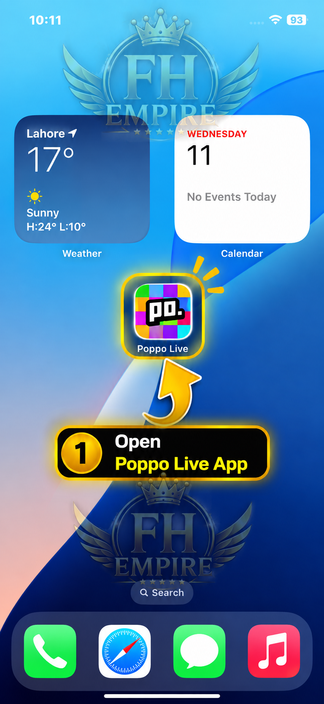
FH EMPIRE • POPPO WITHDRAWAL
Open the Poppo Live app on your mobile device.

Tap the Profile icon at the bottom-right corner.
Tap the pink Points section on your profile.
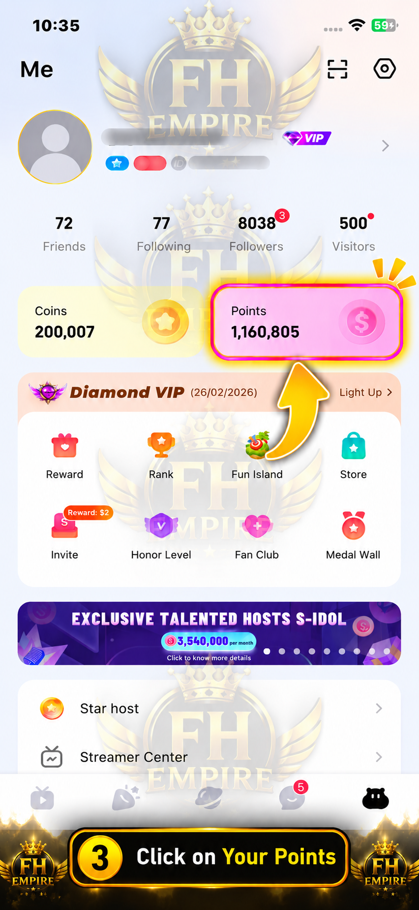
On the Points page, tap the Withdraw now button.
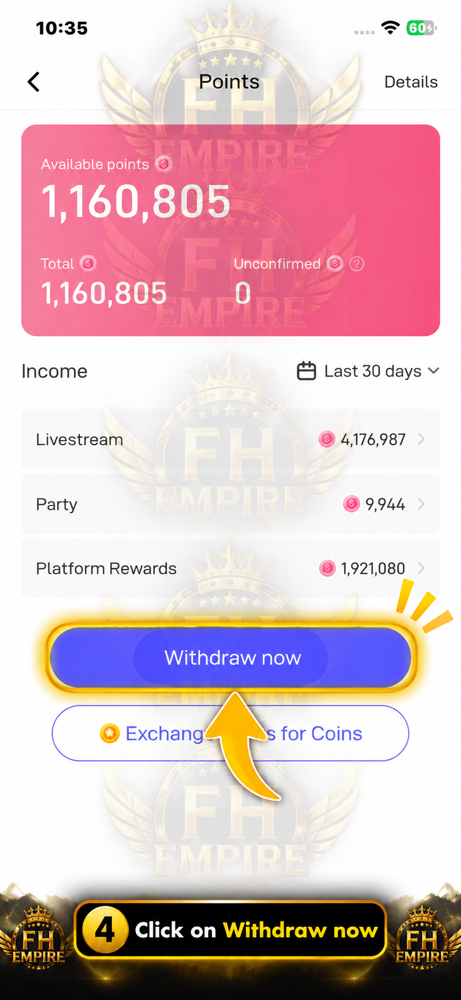
Tap the two-arrow icon beside your current withdrawal method to change the binding.
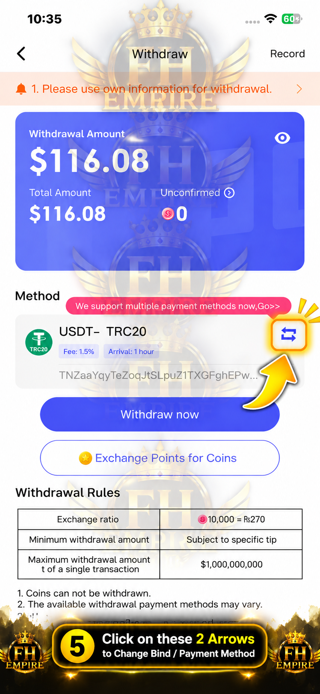
Find Epay in the payment methods and tap Bind.
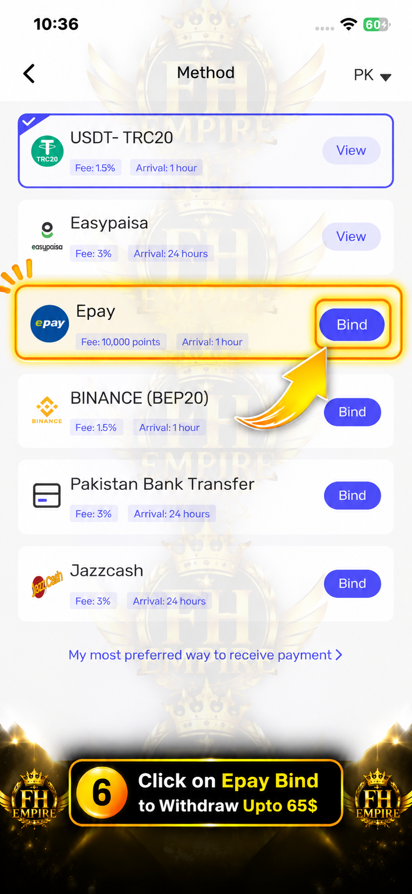
Enter your Poppo security password to continue.
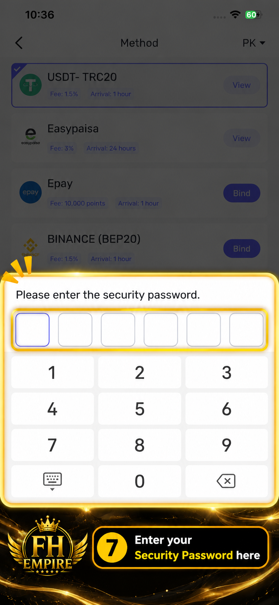
Paste the Epay email provided to you by FH EMPIRE into the Account field.
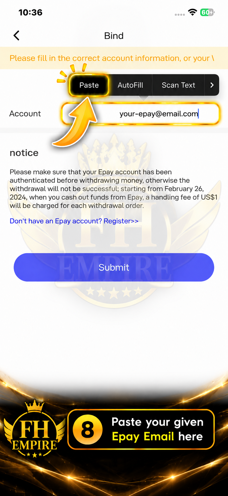
After checking the email carefully, tap Submit.
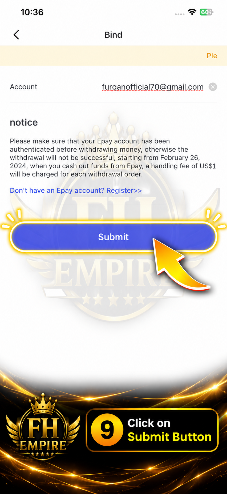
Confirm that Epay is selected, then tap Withdraw now.
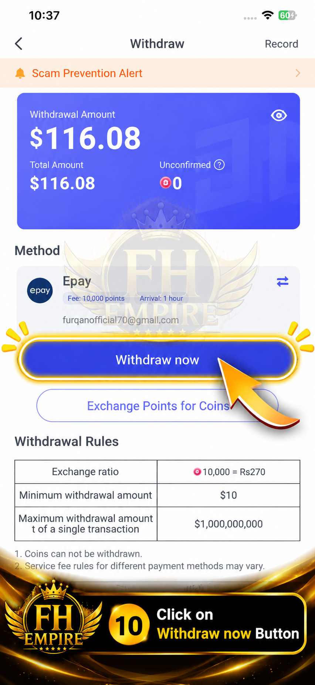
Check the withdrawal amount and tap Confirm.
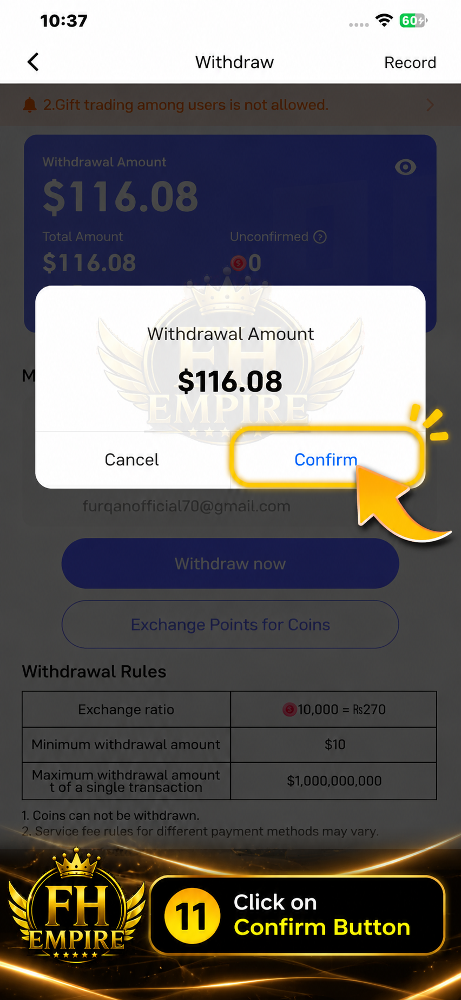
Enter your Poppo security password again to authorize the withdrawal.
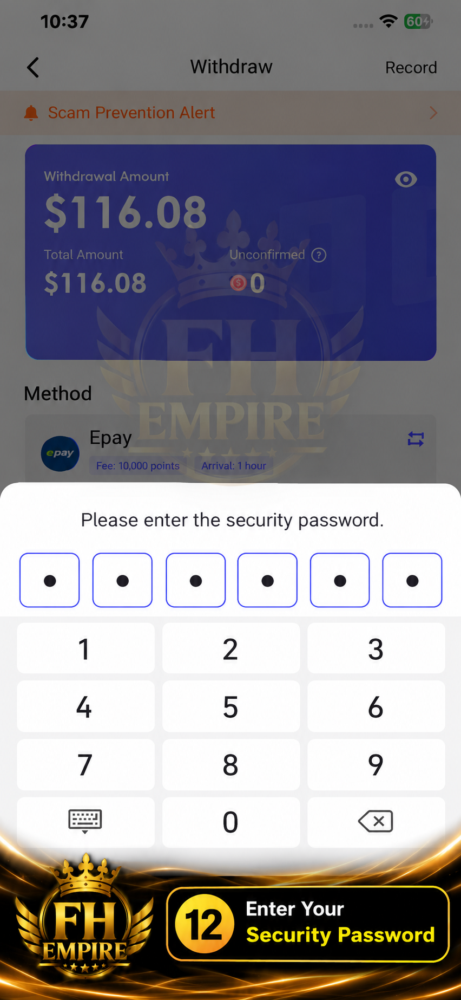
After the withdrawal is submitted, tap Check for details.
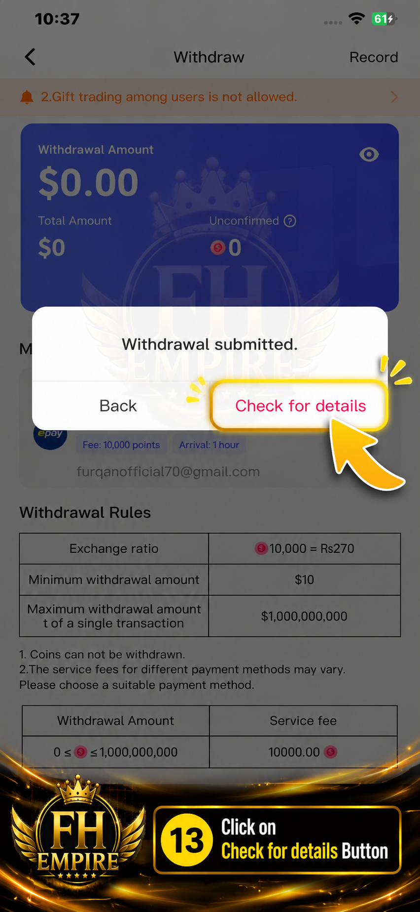
Take a screenshot of the successful withdrawal details and send it to the FH EMPIRE team along with your account details.
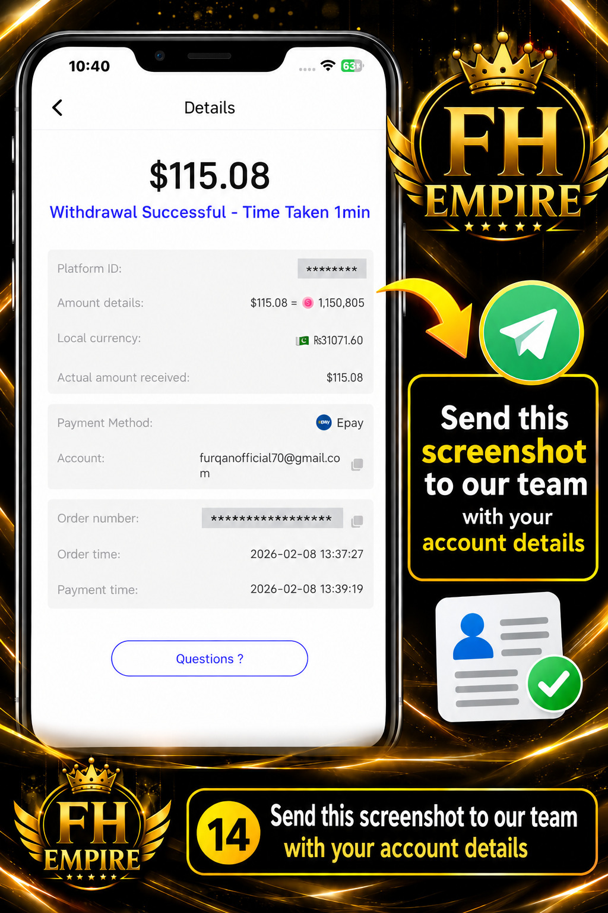
Send the screenshot of the latest withdrawal details along with your account details to the FH EMPIRE team for further processing.
After completing the steps above, send your latest withdrawal screenshot and account details to the FH EMPIRE team.
Send Details on WhatsApp → Please send your latest withdrawal screenshot along with your account/payment details.